<!DOCTYPE html>


<html lang="en">
  

    <head>
      <meta charset="utf-8" />
       
      <meta name="keywords" content="agile, tdd, software engineering" />
       
      <meta
        name="viewport"
        content="width=device-width, initial-scale=1, maximum-scale=1"
      />
      
      <title>JWT User Assertion with Oracle Integration Cloud |  nick dot blog</title>
  <meta name="generator" content="hexo-theme-ayer">
      
      <link rel="shortcut icon" href="/favicon.ico" />
       
<link rel="stylesheet" href="/dist/main.css">

      
<link rel="stylesheet" href="/css/fonts/remixicon.css">

      
<link rel="stylesheet" href="/css/custom.css">
 
      <script src="https://cdn.staticfile.org/pace/1.2.4/pace.min.js"></script>
       
<!-- Global site tag (gtag.js) - Google Analytics -->
<script async src="https://www.googletagmanager.com/gtag/js?id=G-KXJW9BVBJ4"></script>
<script>
  window.dataLayer = window.dataLayer || [];
  function gtag(){dataLayer.push(arguments);}
  gtag('js', new Date());
  gtag('config', 'G-KXJW9BVBJ4');
</script>

 

      <link
        rel="stylesheet"
        href="https://cdn.jsdelivr.net/npm/@sweetalert2/theme-bulma@5.0.1/bulma.min.css"
      />
      <script src="https://cdn.jsdelivr.net/npm/sweetalert2@11.0.19/dist/sweetalert2.min.js"></script>

      <!-- mermaid -->
      
      <style>
        .swal2-styled.swal2-confirm {
          font-size: 1.6rem;
        }
      </style>
    <link rel="alternate" href="/atom.xml" title="nick dot blog" type="application/atom+xml">
</head>
  </html>
</html>


<body>
  <div id="app">
    
      
    <main class="content on">
      <section class="outer">
  <article
  id="post-oicjwt"
  class="article article-type-post"
  itemscope
  itemprop="blogPost"
  data-scroll-reveal
>
  <div class="article-inner">
    
    <header class="article-header">
       
<h1 class="article-title sea-center" style="border-left:0" itemprop="name">
  JWT User Assertion with Oracle Integration Cloud
</h1>
 

      
    </header>
     
    <div class="article-meta">
      <a href="/2023/11/17/oicjwt/" class="article-date">
  <time datetime="2023-11-17T07:04:00.000Z" itemprop="datePublished">2023-11-17</time>
</a> 
  <div class="article-category">
    <a class="article-category-link" href="/categories/Software-Engineering/">Software Engineering</a>
  </div>
  
<div class="word_count">
    <span class="post-time">
        <span class="post-meta-item-icon">
            <i class="ri-quill-pen-line"></i>
            <span class="post-meta-item-text"> Word count:</span>
            <span class="post-count">919</span>
        </span>
    </span>

    <span class="post-time">
        &nbsp; | &nbsp;
        <span class="post-meta-item-icon">
            <i class="ri-book-open-line"></i>
            <span class="post-meta-item-text"> Reading time≈</span>
            <span class="post-count">5 min</span>
        </span>
    </span>
</div>
 
    </div>
      
    <div class="tocbot"></div>


  
    <div class="article-entry" itemprop="articleBody">
       
  <p>Nothing brings out the blogger in me like spending a couple of days wrestling with a problem. This weeks’ challenge has been configuring OAuth 2 User Assertion on the Oracle Integration Cloud (OIC). It’s taken a couple of days of trial and error but it’s finally working! So in the hope of saving future generations some time and frustration here’s how it’s done…</p>
<h1 id="The-scenario"><a href="#The-scenario" class="headerlink" title="The scenario"></a>The scenario</h1><p>We want to push data from our O365 Sharepoint environment into our Oracle ERP system via a Power Automate Flow. We have used Oracle Integration Cloud to create a REST Trigger that receives the payload and processes it. We want to use the JWT User Assertion flow so that the client does not need to have access to any credentials.</p>
<h1 id="About-the-JWT-User-Assertion-Flow"><a href="#About-the-JWT-User-Assertion-Flow" class="headerlink" title="About the JWT User Assertion Flow"></a>About the JWT User Assertion Flow</h1><p>The OAuth 2.0 “JWT Assertion Grant” or “JWT Bearer Token Grant” allows a client to use a JWT as an assertion to obtain an access token from an authorization server.</p>
<p>Here’s a basic overview of the flow:</p>
<ol>
<li><p>Client Creates JWT Assertion:</p>
<ul>
<li>The client creates a JWT (JSON Web Token) containing relevant information, such as its identity, requested scope, and any other necessary claims.</li>
</ul>
</li>
<li><p>Client Sends Assertion to Authorization Server:</p>
<ul>
<li>The client sends the JWT as an assertion to the authorization server, typically in the assertion parameter of the token request.</li>
</ul>
</li>
<li><p>Authorization Server Validates JWT:</p>
<ul>
<li>The authorization server validates the JWT, checking its signature, expiration, and any other relevant claims.</li>
</ul>
</li>
<li><p>Token Issuance:</p>
<ul>
<li>If the JWT is valid, the authorization server responds with an access token.</li>
</ul>
</li>
<li><p>Client Uses Access Token:</p>
<ul>
<li>The client can now use the obtained access token to access protected resources on behalf of the user.</li>
</ul>
</li>
</ol>
<p>This flow is useful in scenarios where the client can provide a signed assertion (JWT) to prove its identity and request access without going through the typical user authorization process involving redirects and user interactions.</p>
<h1 id="Create-and-export-your-certificate"><a href="#Create-and-export-your-certificate" class="headerlink" title="Create and export your certificate"></a>Create and export your certificate</h1><p>Generate the self-signed key pair</p>
<figure class="highlight plaintext"><table><tr><td class="gutter"><pre><span class="line">1</span><br></pre></td><td class="code"><pre><span class="line">keytool -genkey -keyalg RSA -alias assert -keystore sampleKeystore.jks -storepass samplePasswd -validity 365 -keysize 2048</span><br></pre></td></tr></table></figure>

<p>Export the public key for signing the JWT assertion</p>
<figure class="highlight plaintext"><table><tr><td class="gutter"><pre><span class="line">1</span><br></pre></td><td class="code"><pre><span class="line">keytool -exportcert -alias assert -file assert.cer -keystore sampleKeystore.jks -storepass samplePasswd</span><br></pre></td></tr></table></figure>

<p>Convert the keystore to P12 format</p>
<figure class="highlight plaintext"><table><tr><td class="gutter"><pre><span class="line">1</span><br></pre></td><td class="code"><pre><span class="line">keytool -importkeystore -srckeystore sampleKeystore.jks -srcstorepass samplePasswd -srckeypass samplePasswd -srcalias assert -destalias assert -destkeystore assert.p12 -deststoretype PKCS12 -deststorepass samplePasswd -destkeypass samplePasswd</span><br></pre></td></tr></table></figure>

<p>Export the private key from the P12 keystore</p>
<figure class="highlight plaintext"><table><tr><td class="gutter"><pre><span class="line">1</span><br></pre></td><td class="code"><pre><span class="line">openssl pkcs12 -in assert.p12 -nodes -nocerts -out private_key.pem</span><br></pre></td></tr></table></figure>

<h1 id="Create-your-Client-Application"><a href="#Create-your-Client-Application" class="headerlink" title="Create your Client Application"></a>Create your Client Application</h1><p>From the Oracle Identity Cloud Applications panel choose ‘Add’.<br>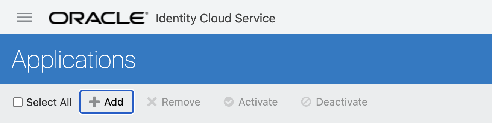</p>
<p>Choose ‘Confidential Application’<br>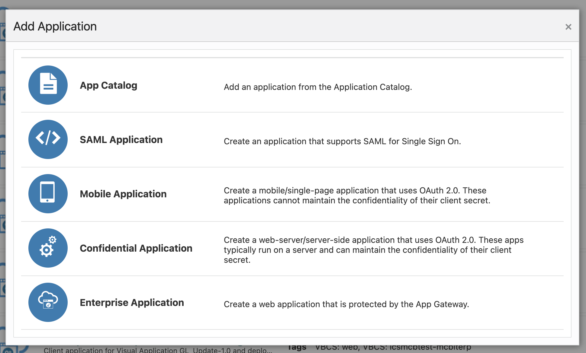</p>
<p>Under the ‘Client Configuration’ set the ‘Allowed Grant Types’ to ‘Client Credentials’ and ‘JWT Assertion’.<br>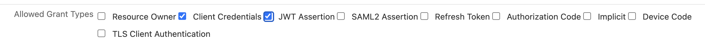</p>
<p>Under ‘Security’ choose ‘Trusted Client’ and upload the .cer file you created earlier. Set the alias for the certificate and keep track of this value as you will need it later.<br>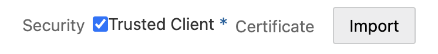</p>
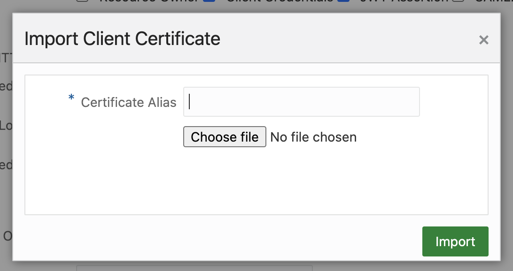

<p>Under ‘Token Issuance Policy’ select ‘Specific’ and then ‘Add Scope’ under the ‘Resources’ section.</p>
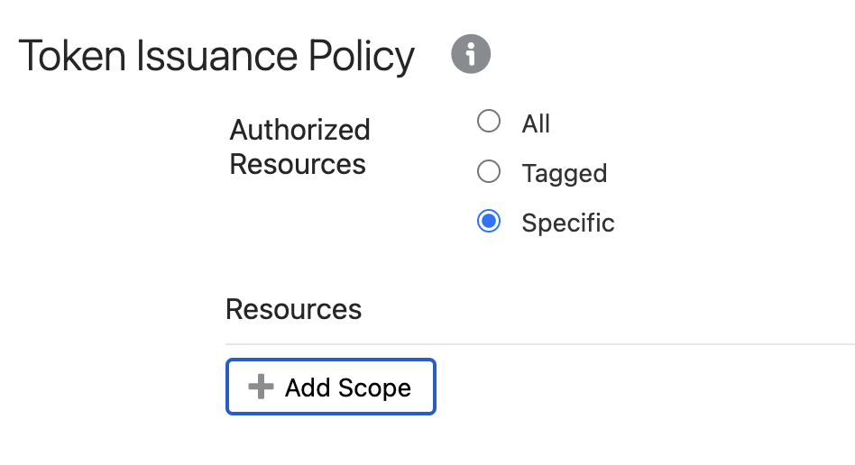

<p>Find the OIC application that you want to provide access to and click the ‘&gt;’ symbol.</p>
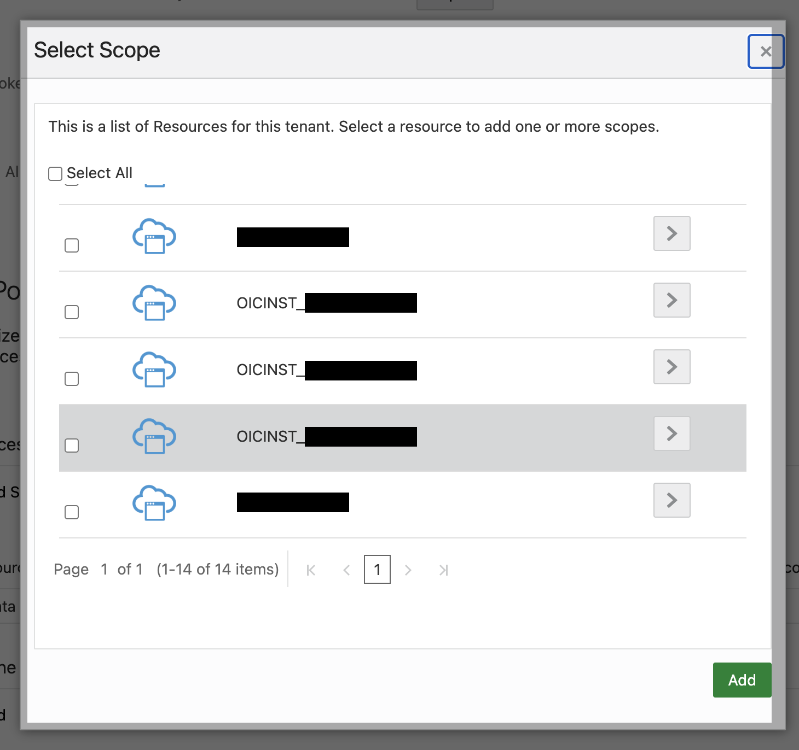

<p>Select the scope that ends in ‘urn:opc:resource:consumer::all’. Keep track of this value as you will need it later.</p>
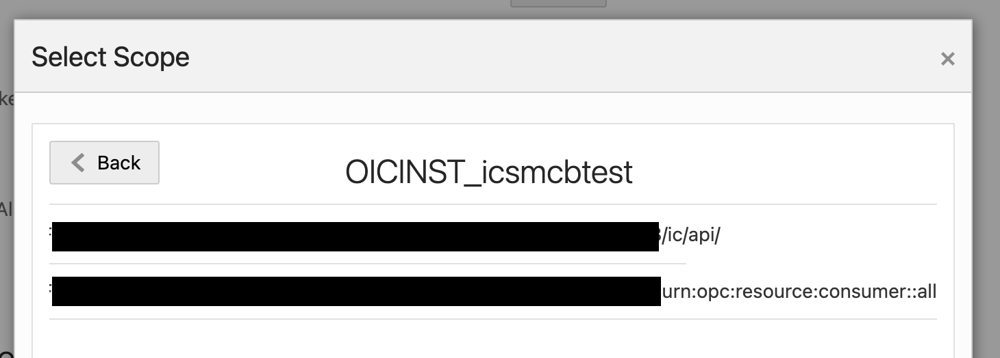

<p>You can accept the defaults for the remaining steps and save your application. Don’t forget to Activate it afterwards. Take note of the Client Id and Secret.</p>
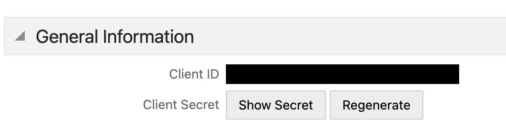

<h1 id="Create-Trusted-Partner"><a href="#Create-Trusted-Partner" class="headerlink" title="Create Trusted Partner"></a>Create Trusted Partner</h1><p>Even though we added the certificate to the application we also need to add it as a Truster Partner. In Oracle Identity Cloud navigate to Settings, Partner Settings and click ‘Import’ under ‘Partner Settings’.<br>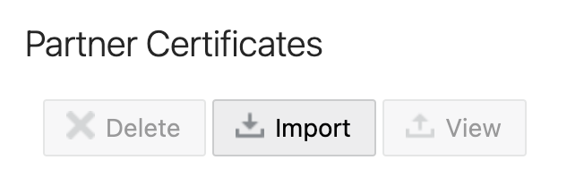</p>
<p>Upload the .cer file you created earlier and set the alias to the same value you used when creating the application.</p>
<h1 id="Generate-the-JWT-User-Assertion"><a href="#Generate-the-JWT-User-Assertion" class="headerlink" title="Generate the JWT User Assertion"></a>Generate the JWT User Assertion</h1><p>You now need to create and sign a JWT token that describes the user and scope you want access to. You then submit this token to Oracle to retrieve a Bearer token that can be used to access your OIC resource.</p>
<p>The relevant fields in the JWT Payload are:</p>
<table>
<thead>
<tr>
<th>Field</th>
<th>Description</th>
</tr>
</thead>
<tbody><tr>
<td>sub</td>
<td>the user name for whom user assertion is generated.</td>
</tr>
<tr>
<td>aud</td>
<td><a target="_blank" rel="noopener" href="https://identity.oracle.com/">https://identity.oracle.com/</a></td>
</tr>
<tr>
<td>kid</td>
<td>The id of the key to use to verify the signature. Set this to the alias you used when uploading the certificate.</td>
</tr>
<tr>
<td>iss</td>
<td>The client id.</td>
</tr>
<tr>
<td>alg</td>
<td>Must be RS256</td>
</tr>
</tbody></table>
<p>Once you have your JWT token you can submit it to Oracle as follows:</p>
<figure class="highlight plaintext"><table><tr><td class="gutter"><pre><span class="line">1</span><br><span class="line">2</span><br><span class="line">3</span><br><span class="line">4</span><br><span class="line">5</span><br><span class="line">6</span><br></pre></td><td class="code"><pre><span class="line">curl -L -X POST &lt;Oracle Identity Cloud&gt;/oauth2/v1/token </span><br><span class="line">    -H &#x27;Content-Type: application/x-www-form-urlencoded&#x27; </span><br><span class="line">    -H &#x27;Authorization: Basic &lt;Base64 encoded client id and secret&gt;&#x27; </span><br><span class="line">    --data-urlencode grant_type=urn:ietf:params:oauth:grant-type:jwt-bearer</span><br><span class="line">    --data-urlencode assertion=&lt;your JWT Token&gt;</span><br><span class="line">    --data-urlencode scope=&lt;your scope&gt;</span><br></pre></td></tr></table></figure>
<p>See <a target="_blank" rel="noopener" href="https://docs.oracle.com/en/cloud/paas/identity-cloud/rest-api/op-oauth2-v1-token-post.html">here</a> for the API Documentation.</p>
<p>Alternatively you can use <a target="_blank" rel="noopener" href="https://orasites-prodapp.ocecdn.oraclecloud.com/content/published/api/v1.1/assets/CONT89581F004ECA48BC9FDF023E6BA5EBD9/native/generateJWTUserAssertion.sh?channelToken=842764f99b9a4a06a862ebc785ac9897">this</a> Oracle-supplied script.</p>
<p>You will need to edit the following parameters in the script:</p>
<figure class="highlight plaintext"><table><tr><td class="gutter"><pre><span class="line">1</span><br><span class="line">2</span><br><span class="line">3</span><br><span class="line">4</span><br><span class="line">5</span><br><span class="line">6</span><br><span class="line">7</span><br><span class="line">8</span><br><span class="line">9</span><br></pre></td><td class="code"><pre><span class="line">APP_ID=&quot;&lt;your client id&gt;&quot;</span><br><span class="line">AUD=&quot;https://identity.oraclecloud.com/&quot;</span><br><span class="line">SUB=&quot;&lt;user name&gt;&quot;</span><br><span class="line">JTI=&quot;8c7df446-bfae-40be-be09-0ab55c655436&quot;</span><br><span class="line">KID=&quot;&lt;certificate alias&gt;&quot;</span><br><span class="line"></span><br><span class="line">ClientID=&quot;&lt;your client id&gt;&quot;</span><br><span class="line">ClientSecret=&quot;&lt;your client secret&gt;&quot;</span><br><span class="line">Scope=&quot;&lt;your OIC scope recorded earlier&gt;urn:opc:resource:consumer::all&quot;</span><br></pre></td></tr></table></figure>

<p>Either way Oracle will respond with a Bearer token. Pass this in the Authentication Header when calling your OIC flow in order to authenticate.</p>
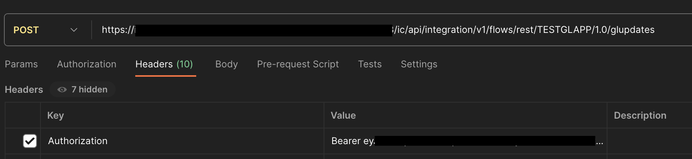

<h1 id="Conclusion"><a href="#Conclusion" class="headerlink" title="Conclusion"></a>Conclusion</h1><p>There you go! At this point you are successfully authenticating against your OIC Rest Service using a JWT Bearer token. </p>
 
      <!-- reward -->
      
    </div>
    

    <!-- copyright -->
    
    <div class="declare">
      <ul class="post-copyright">
        <li>
          <i class="ri-copyright-line"></i>
          <strong>Copyright： </strong>
          
          Copyright is owned by the author. For commercial reprints, please contact the author for authorization. For non-commercial reprints, please indicate the source.
          
        </li>
      </ul>
    </div>
    
    <footer class="article-footer">
       
  <ul class="article-tag-list" itemprop="keywords"><li class="article-tag-list-item"><a class="article-tag-list-link" href="/tags/oauth/" rel="tag">oauth</a></li></ul>

    </footer>
  </div>

   
  <nav class="article-nav">
    
    
      <a href="/2023/10/27/testing-architecture/" class="article-nav-link">
        <strong class="article-nav-caption">Next Post</strong>
        <div class="article-nav-title">Testable Architecture with ArchUnit</div>
      </a>
    
  </nav>

  
   
<div class="gitalk" id="gitalk-container"></div>

<link rel="stylesheet" href="https://cdn.staticfile.org/gitalk/1.7.2/gitalk.min.css">


<script src="https://cdn.staticfile.org/gitalk/1.7.2/gitalk.min.js"></script>


<script src="https://cdn.staticfile.org/blueimp-md5/2.19.0/js/md5.min.js"></script>

<script type="text/javascript">
  var gitalk = new Gitalk({
    clientID: '8318211c28156a054b60',
    clientSecret: 'a3e7c2c22e61867951cbca3c52fbcc22f43dcfb8',
    repo: 'BlogComments',
    owner: 'nickmza',
    admin: ['nickmza'],
    // id: location.pathname,      // Ensure uniqueness and length less than 50
    id: md5(location.pathname),
    distractionFreeMode: false,  // Facebook-like distraction free mode
    pagerDirection: 'last'
  })

  gitalk.render('gitalk-container')
</script>

  
   
    <script src="https://cdn.staticfile.org/twikoo/1.4.18/twikoo.all.min.js"></script>
    <div id="twikoo" class="twikoo"></div>
    <script>
        twikoo.init({
            envId: ""
        })
    </script>
 
</article>

</section>
      <footer class="footer">
  <div class="outer">
    <ul>
      <li>
        Copyrights &copy;
        2015-2024
        <i class="ri-heart-fill heart_icon"></i> Nick Mckenzie
      </li>
    </ul>
    <ul>
      <li>
        
      </li>
    </ul>
    <ul>
      <li>
        
      </li>
    </ul>
    <ul>
      
    </ul>
    <ul>
      
    </ul>
    <ul>
      <li>
        <!-- cnzz统计 -->
        
        <script type="text/javascript" src='https://s9.cnzz.com/z_stat.php?id=1278069914&amp;web_id=1278069914'></script>
        
      </li>
    </ul>
  </div>
</footer>    
    </main>
    <div class="float_btns">
      <div class="totop" id="totop">
  <i class="ri-arrow-up-line"></i>
</div>

<div class="todark" id="todark">
  <i class="ri-moon-line"></i>
</div>

    </div>
    <aside class="sidebar on">
      <button class="navbar-toggle"></button>
<nav class="navbar">
  
  <div class="logo">
    <a href="/"></a>
  </div>
  
  <ul class="nav nav-main">
    
    <li class="nav-item">
      <a class="nav-item-link" href="/">Home</a>
    </li>
    
    <li class="nav-item">
      <a class="nav-item-link" href="/archives">Archives</a>
    </li>
    
    <li class="nav-item">
      <a class="nav-item-link" href="/categories">Categories</a>
    </li>
    
    <li class="nav-item">
      <a class="nav-item-link" href="/tags">Tags</a>
    </li>
    
    <li class="nav-item">
      <a class="nav-item-link" href="/Resources">Resources</a>
    </li>
    
    <li class="nav-item">
      <a class="nav-item-link" href="/about">About</a>
    </li>
    
  </ul>
</nav>
<nav class="navbar navbar-bottom">
  <ul class="nav">
    <li class="nav-item">
      
      <a class="nav-item-link nav-item-search"  title="Search">
        <i class="ri-search-line"></i>
      </a>
      
      
      <a class="nav-item-link" target="_blank" href="/atom.xml" title="RSS Feed">
        <i class="ri-rss-line"></i>
      </a>
      
    </li>
  </ul>
</nav>
<div class="search-form-wrap">
  <div class="local-search local-search-plugin">
  <input type="search" id="local-search-input" class="local-search-input" placeholder="Search...">
  <div id="local-search-result" class="local-search-result"></div>
</div>
</div>
    </aside>
    <div id="mask"></div>

<!-- #reward -->
<div id="reward">
  <span class="close"><i class="ri-close-line"></i></span>
  <p class="reward-p"><i class="ri-cup-line"></i>请我喝杯咖啡吧~</p>
  <div class="reward-box">
    
    <div class="reward-item">
      
      <span class="reward-type">支付宝</span>
    </div>
    
    
    <div class="reward-item">
      
      <span class="reward-type">微信</span>
    </div>
    
  </div>
</div>
    
<script src="/js/jquery-3.6.0.min.js"></script>
 
<script src="/js/lazyload.min.js"></script>

<!-- Tocbot -->
 
<script src="/js/tocbot.min.js"></script>

<script>
  tocbot.init({
    tocSelector: ".tocbot",
    contentSelector: ".article-entry",
    headingSelector: "h1, h2, h3, h4, h5, h6",
    hasInnerContainers: true,
    scrollSmooth: true,
    scrollContainer: "main",
    positionFixedSelector: ".tocbot",
    positionFixedClass: "is-position-fixed",
    fixedSidebarOffset: "auto",
  });
</script>

<script src="https://cdn.staticfile.org/jquery-modal/0.9.2/jquery.modal.min.js"></script>
<link
  rel="stylesheet"
  href="https://cdn.staticfile.org/jquery-modal/0.9.2/jquery.modal.min.css"
/>
<script src="https://cdn.staticfile.org/justifiedGallery/3.8.1/js/jquery.justifiedGallery.min.js"></script>

<script src="/dist/main.js"></script>

<!-- ImageViewer -->
 <!-- Root element of PhotoSwipe. Must have class pswp. -->
<div class="pswp" tabindex="-1" role="dialog" aria-hidden="true">

    <!-- Background of PhotoSwipe. 
         It's a separate element as animating opacity is faster than rgba(). -->
    <div class="pswp__bg"></div>

    <!-- Slides wrapper with overflow:hidden. -->
    <div class="pswp__scroll-wrap">

        <!-- Container that holds slides. 
            PhotoSwipe keeps only 3 of them in the DOM to save memory.
            Don't modify these 3 pswp__item elements, data is added later on. -->
        <div class="pswp__container">
            <div class="pswp__item"></div>
            <div class="pswp__item"></div>
            <div class="pswp__item"></div>
        </div>

        <!-- Default (PhotoSwipeUI_Default) interface on top of sliding area. Can be changed. -->
        <div class="pswp__ui pswp__ui--hidden">

            <div class="pswp__top-bar">

                <!--  Controls are self-explanatory. Order can be changed. -->

                <div class="pswp__counter"></div>

                <button class="pswp__button pswp__button--close" title="Close (Esc)"></button>

                <button class="pswp__button pswp__button--share" style="display:none" title="Share"></button>

                <button class="pswp__button pswp__button--fs" title="Toggle fullscreen"></button>

                <button class="pswp__button pswp__button--zoom" title="Zoom in/out"></button>

                <!-- Preloader demo http://codepen.io/dimsemenov/pen/yyBWoR -->
                <!-- element will get class pswp__preloader--active when preloader is running -->
                <div class="pswp__preloader">
                    <div class="pswp__preloader__icn">
                        <div class="pswp__preloader__cut">
                            <div class="pswp__preloader__donut"></div>
                        </div>
                    </div>
                </div>
            </div>

            <div class="pswp__share-modal pswp__share-modal--hidden pswp__single-tap">
                <div class="pswp__share-tooltip"></div>
            </div>

            <button class="pswp__button pswp__button--arrow--left" title="Previous (arrow left)">
            </button>

            <button class="pswp__button pswp__button--arrow--right" title="Next (arrow right)">
            </button>

            <div class="pswp__caption">
                <div class="pswp__caption__center"></div>
            </div>

        </div>

    </div>

</div>

<link rel="stylesheet" href="https://cdn.staticfile.org/photoswipe/4.1.3/photoswipe.min.css">
<link rel="stylesheet" href="https://cdn.staticfile.org/photoswipe/4.1.3/default-skin/default-skin.min.css">
<script src="https://cdn.staticfile.org/photoswipe/4.1.3/photoswipe.min.js"></script>
<script src="https://cdn.staticfile.org/photoswipe/4.1.3/photoswipe-ui-default.min.js"></script>

<script>
    function viewer_init() {
        let pswpElement = document.querySelectorAll('.pswp')[0];
        let $imgArr = document.querySelectorAll(('.article-entry img:not(.reward-img)'))

        $imgArr.forEach(($em, i) => {
            $em.onclick = () => {
                // slider展开状态
                // todo: 这样不好，后面改成状态
                if (document.querySelector('.left-col.show')) return
                let items = []
                $imgArr.forEach(($em2, i2) => {
                    let img = $em2.getAttribute('data-idx', i2)
                    let src = $em2.getAttribute('data-target') || $em2.getAttribute('src')
                    let title = $em2.getAttribute('alt')
                    // 获得原图尺寸
                    const image = new Image()
                    image.src = src
                    items.push({
                        src: src,
                        w: image.width || $em2.width,
                        h: image.height || $em2.height,
                        title: title
                    })
                })
                var gallery = new PhotoSwipe(pswpElement, PhotoSwipeUI_Default, items, {
                    index: parseInt(i)
                });
                gallery.init()
            }
        })
    }
    viewer_init()
</script> 
<!-- MathJax -->

<!-- Katex -->

<!-- busuanzi  -->

<!-- ClickLove -->

<!-- ClickBoom1 -->

<!-- ClickBoom2 -->

<!-- CodeCopy -->
 
<link rel="stylesheet" href="/css/clipboard.css">
 <script src="https://cdn.staticfile.org/clipboard.js/2.0.10/clipboard.min.js"></script>
<script>
  function wait(callback, seconds) {
    var timelag = null;
    timelag = window.setTimeout(callback, seconds);
  }
  !function (e, t, a) {
    var initCopyCode = function(){
      var copyHtml = '';
      copyHtml += '<button class="btn-copy" data-clipboard-snippet="">';
      copyHtml += '<i class="ri-file-copy-2-line"></i><span>COPY</span>';
      copyHtml += '</button>';
      $(".highlight .code pre").before(copyHtml);
      $(".article pre code").before(copyHtml);
      var clipboard = new ClipboardJS('.btn-copy', {
        target: function(trigger) {
          return trigger.nextElementSibling;
        }
      });
      clipboard.on('success', function(e) {
        let $btn = $(e.trigger);
        $btn.addClass('copied');
        let $icon = $($btn.find('i'));
        $icon.removeClass('ri-file-copy-2-line');
        $icon.addClass('ri-checkbox-circle-line');
        let $span = $($btn.find('span'));
        $span[0].innerText = 'COPIED';
        
        wait(function () { // 等待两秒钟后恢复
          $icon.removeClass('ri-checkbox-circle-line');
          $icon.addClass('ri-file-copy-2-line');
          $span[0].innerText = 'COPY';
        }, 2000);
      });
      clipboard.on('error', function(e) {
        e.clearSelection();
        let $btn = $(e.trigger);
        $btn.addClass('copy-failed');
        let $icon = $($btn.find('i'));
        $icon.removeClass('ri-file-copy-2-line');
        $icon.addClass('ri-time-line');
        let $span = $($btn.find('span'));
        $span[0].innerText = 'COPY FAILED';
        
        wait(function () { // 等待两秒钟后恢复
          $icon.removeClass('ri-time-line');
          $icon.addClass('ri-file-copy-2-line');
          $span[0].innerText = 'COPY';
        }, 2000);
      });
    }
    initCopyCode();
  }(window, document);
</script>
 
<!-- CanvasBackground -->

<script>
  if (window.mermaid) {
    mermaid.initialize({ theme: "forest" });
  }
</script>


    
    

  </div>
</body>

</html>